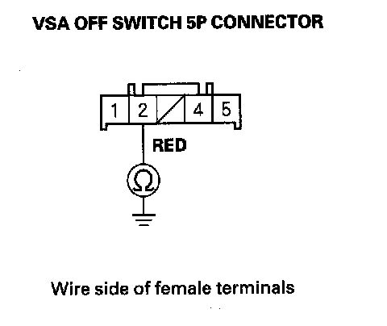

VSA Activation Indicator Does Not Go Off and No DTCs Are Stored
VSA activation indicator does not go off, and no DTCs are stored1. Turn the ignition switch ON (II), and watch the VSA activation indicator.
Does VSA activation indicator go off within 2 seconds?
YES-The system is OK at this time
NO-Go to step 2.
2. Turn the ignition switch OFF.
3. Disconnect the VSA OFF switch 5P connector.
4. Check the VSA OFF switch.
Is the VSA OFF switch OK?
YES-Go to step 5.
NO-Replace the VSA OFF switch
5. Remove the gauge control module.
6. Disconnect gauge control module connector B (24P).
7. Check for continuity between VSA OFF switch 5P connector terminal No. 2 and body ground.

Is there continuity?
YES-Repair short to body ground between the gauge control module and the VSA OFF switch.
NO-Substitute a known-good gauge control module, then go to step 1 and recheck. If it is OK, replace the original gauge control module.